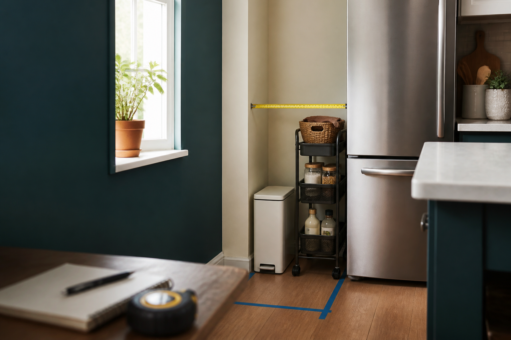

Trash can under 10 inches?
Choose a straight-sided can and check lid swing before buying for a narrow kitchen gap.
Open guide
Measure-first buying guides
Shopping guides for narrow, compact, under-sink, over-door, low-clearance, and awkward spaces. Start with the measurement, then pick products that will clear pipes, doors, lids, outlets, baseboards, and walkways.
Start here
These guides focus on products where one wrong inch can turn into a return, a blocked door, a lid that cannot open, or storage that technically fits but cannot be used.
Choose a straight-sided can and check lid swing before buying for a narrow kitchen gap.
Open guidePick adjustable organizers that leave room for the P-trap, valves, disposal, and cabinet doors.
Open guideMeasure the real gap from floor to frame before ordering under-bed bins or rolling drawers.
Open guideBrowse by constraint
Pick the awkward space first. The product choice comes after the measurement.
Slim trash cans, rolling carts, shallow shelves, compact pantry cabinets, and counter-saving storage.
Open categoryOrganizers that work around drains, valves, hinges, cabinet doors, and shallow shelves.
Open categorySlim hampers, over-toilet storage, narrow cabinets, towel racks, and compact caddies.
Open categoryShallow shoe racks, narrow benches, boot trays, key tables, and storage that does not block the door.
Open categorySmall nightstands, narrow side tables, compact dressers, wardrobes, and bedside shelves.
Open categoryUnder-bed bins, low rolling drawers, flat boxes, and storage for short sofa or bed gaps.
Open categoryQuick picker
Choose the measurement that will decide whether the product works.
Suggested path
Width is the first filter for slim trash cans, rolling carts, shallow pantry shelves, and tight counter storage.
Open suggested categoryBuying approach
The best guide starts before the Amazon search: tape measure, real clearances, moving parts, and a clear reason to skip products that are close but not right.
The opening is not always the usable space. Pipes, handles, trim, plugs, and baseboards can steal the inch that matters.
Lids, drawers, doors, casters, tilt-out fronts, and foldable racks need clearance after the product is in place.
A product that barely fits can still fail if you cannot pull it out, open it, clean behind it, or walk past it.